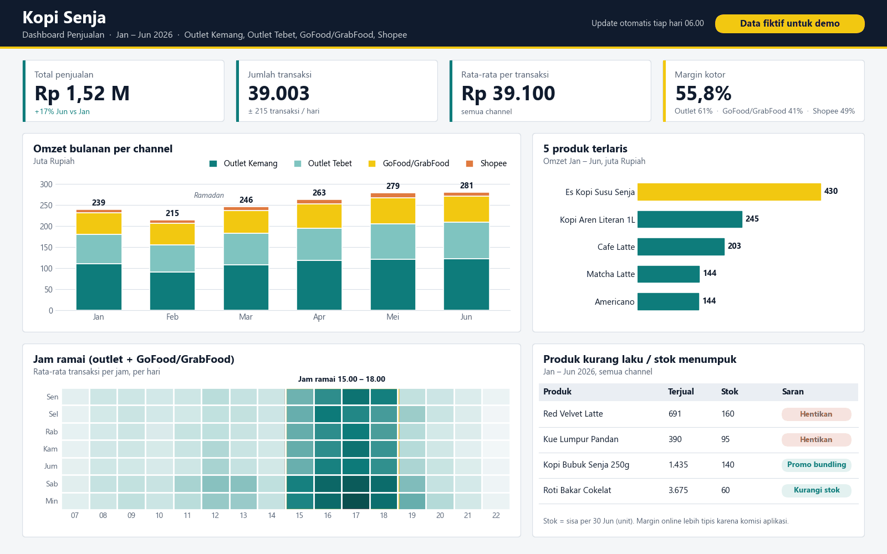

UMKM · Google Sheets · Looker Studio
Dashboard Penjualan UMKM
Sebuah kedai kopi dengan 2 outlet, GoFood/GrabFood dan Shopee merekap penjualan secara manual setiap minggu. Kami gabungkan semua sumber data ke satu dashboard yang update otomatis.
Studi kasus demo dengan data fiktif — menunjukkan cara kerja dan hasil yang bisa Anda dapatkan.
- 1Masalah4 file Excel terpisah, ±4 jam per minggu
- 2Gabungkan & rapikankasir, GoFood/GrabFood, Shopee
- 3OtomatiskanGoogle Sheets + Looker Studio
- 4Hasilsatu dashboard, update tiap hari →

Masalah
Pemilik usaha merekap penjualan sendiri setiap minggu. Datanya tersebar di 4 tempat dengan format yang berbeda-beda.
Sumber data yang terpisah
- Export kasir dari 2 outlet, masing-masing dalam file Excel sendiri.
- Laporan GoFood/GrabFood yang diunduh terpisah dari aplikasi mitra.
- Laporan pesanan Shopee dengan kolom dan nama produk yang berbeda lagi.
Akibatnya
- Rekap mingguan memakan ±4 jam: salin-tempel, cocokkan nama produk, hitung ulang.
- Nama produk tidak seragam ("Es Kopsu", "ES KOPI SUSU SENJA", "Kopi Susu Es"), jadi angka per produk sering tidak cocok.
- Komisi aplikasi tidak ikut dihitung, sehingga margin per channel tidak terlihat.
Yang dikerjakan
Gabungkan dan rapikan
- Menggabungkan 4 sumber data (kasir 2 outlet, GoFood/GrabFood, Shopee) ke satu tabel penjualan.
- Standardisasi nama produk dengan tabel pemetaan, jadi satu produk punya satu nama di semua channel.
- Menambahkan HPP per produk dan komisi per channel untuk menghitung margin kotor.
Update otomatis
- Data masuk ke Google Sheets sebagai satu sumber utama.
- Dashboard Looker Studio membaca Sheets tersebut dan ter-update otomatis setiap hari.
- Pemilik cukup membuka satu link, tanpa rekap manual di Excel.
Hasil
Angka di bawah berasal dari data demo, untuk menunjukkan jenis jawaban yang bisa Anda dapatkan dari dashboard seperti ini.
Contoh insight
- Margin channel online lebih tipis karena komisi aplikasi: sekitar 41% di GoFood/GrabFood dibanding 61% di outlet.
- 2 produk kurang laku (Red Velvet Latte dan Kue Lumpur Pandan) disarankan dihentikan agar stok tidak menumpuk.
- Jam ramai 15.00–18.00 di semua hari, paling padat di akhir pekan: waktu yang tepat untuk menambah staf atau promo.
Yang ada di dashboard
- Total penjualan, jumlah transaksi, rata-rata per transaksi dan margin kotor.
- Omzet bulanan per channel dan 5 produk terlaris.
- Heatmap jam ramai per hari dan tabel produk kurang laku / stok menumpuk.
Kopi Senja adalah usaha fiktif. Semua angka dibuat untuk demo.
Tools
- Google Sheets
- Looker Studio
- Excel
Mau dashboard seperti ini untuk usaha Anda?
Kirim contoh data penjualan Anda dan apa yang ingin dipantau. Kami jelaskan apa yang bisa dibuat dan berapa lama pengerjaannya.
Hubungi Kemang DataChat via WhatsApp